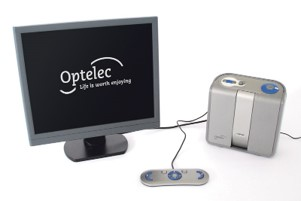

Information
Information on technical equipment specifications applicable to the visually impaired and partially applicable to the visually impaired in IAC Georgia
1. ClearReader+ Advanced
-
A device that magnifies and reads documents aloud. -

Features
① Expand the scan and read functionality
: Rediscover the joy of reading. Scan and magnify your post or favorite magazines instantly using
your monitor with the ClearReader+ Advanced. Use the convenient feature pack to listen to news,
view images or read handwritten notes.
② Optimal reading
: By the press of a button, the ClearReader+ Advanced changes the appearance of any printed text
to your preferences. The formatted text will offer you an optimal reading comfort.
③ Easy navigation
: Select the text of your interest by simply navigating with the easily recognizable buttons.
The ClearReader+ Advanced automatically identifies paragraphs and columns to help you navigate
faster within the text.
④ Save and retrieve documents
: With the ClearReader+ Advanced you have the option to save your post or interesting articles
for later reference. Archive single and multiple page documents and access them when needed by
using the special large font menu.
⑤ Quick voice selection
: With the ClearReader+ Advanced you can choose between 59 available high-quality, naturally
sounding male and female voices in 31 different languages to read text alound. By using the easy
to operate buttons, you can match the language of your document with that of your unit easily.
: Rediscover the joy of reading. Scan and magnify your post or favorite magazines instantly using
your monitor with the ClearReader+ Advanced. Use the convenient feature pack to listen to news,
view images or read handwritten notes.
② Optimal reading
: By the press of a button, the ClearReader+ Advanced changes the appearance of any printed text
to your preferences. The formatted text will offer you an optimal reading comfort.
③ Easy navigation
: Select the text of your interest by simply navigating with the easily recognizable buttons.
The ClearReader+ Advanced automatically identifies paragraphs and columns to help you navigate
faster within the text.
④ Save and retrieve documents
: With the ClearReader+ Advanced you have the option to save your post or interesting articles
for later reference. Archive single and multiple page documents and access them when needed by
using the special large font menu.
⑤ Quick voice selection
: With the ClearReader+ Advanced you can choose between 59 available high-quality, naturally
sounding male and female voices in 31 different languages to read text alound. By using the easy
to operate buttons, you can match the language of your document with that of your unit easily.
Specifications
- High resolution auto-focus camera with state of the art wide angle optics
- High resolution full screen HDMI monitor support up to 1920x1080 pixels
- Fast text recognition (OCR)
- Magnification: in 10 steps
- 59 high quality, easy-to-change reading voices
- 31 supported languages
- Saving and opening documents
- Large font menu
- Handheld remote control with easy-to-operate buttons
- Built-in stereo speakers
- Volume control
- Speed control
- Headphone connector
- USB port
- HDMI port
- SD card slot
- Integrated rechargeable Li-ion battery: offering 5 hours continuous use
- Integrated LED lighting for even illumination
- Foldable carrying handle
- Dimensions: 23 x 24 x 10 cm, 9.1 x 9.4 x 3.9 in
- Weight: 2.46 kg / 5.4 lb
- Dimensions control panel: 20 x 1.5 x 7 cm / 7.9 x 0.6 x 2.8 in
- Weight control panel: 215 g / 7.6 oz
- High resolution full screen HDMI monitor support up to 1920x1080 pixels
- Fast text recognition (OCR)
- Magnification: in 10 steps
- 59 high quality, easy-to-change reading voices
- 31 supported languages
- Saving and opening documents
- Large font menu
- Handheld remote control with easy-to-operate buttons
- Built-in stereo speakers
- Volume control
- Speed control
- Headphone connector
- USB port
- HDMI port
- SD card slot
- Integrated rechargeable Li-ion battery: offering 5 hours continuous use
- Integrated LED lighting for even illumination
- Foldable carrying handle
- Dimensions: 23 x 24 x 10 cm, 9.1 x 9.4 x 3.9 in
- Weight: 2.46 kg / 5.4 lb
- Dimensions control panel: 20 x 1.5 x 7 cm / 7.9 x 0.6 x 2.8 in
- Weight control panel: 215 g / 7.6 oz
Addr. #99 Vazha-Pshavela Avenue, 0186, Tbilisi, Georgia
Addr. ვაჟა-ფშაველას გამზირი 99, 0182 Tbilisi, Georgia
Tel. +995 577 15 70 21
NIA KOREA
Addr. ვაჟა-ფშაველას გამზირი 99, 0182 Tbilisi, Georgia
Tel. +995 577 15 70 21